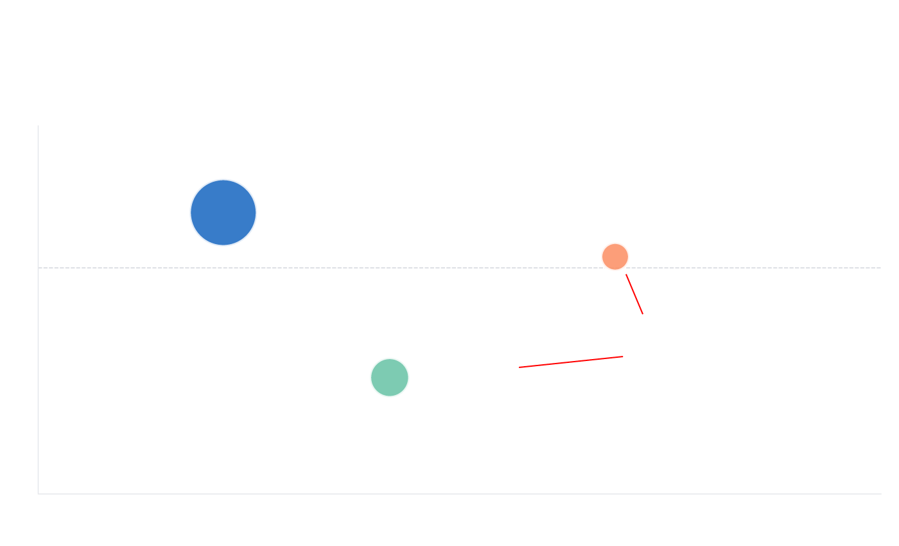
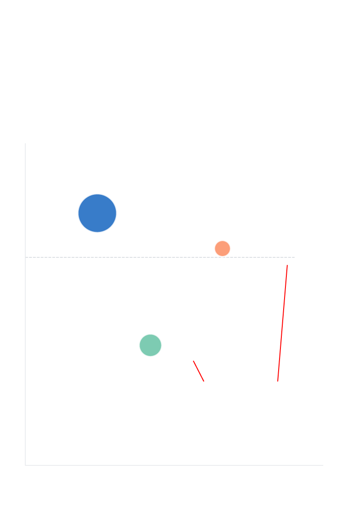

Analysis
AI race's battle lines are being redrawn
Behind OpenAI’s brief pivot to openness and Alibaba’s retreat behind a paywall lies a deeper question: can giving AI away for free survive as a business strategy?
April 5, 2026
On the surface, Alibaba’s numbers look strong. Its cloud revenue surged 36 per cent year-on-year to 43.3 billion yuan (about US$6.3 billion), and AI-related product revenue has grown at triple-digit rates for ten consecutive quarters.
But the open-source model that powered that growth was becoming a problem. Building frontier models costs more every year – frontier training costs are growing 2.4 times annually, according to CB Insights – and giving the results away makes it hard to recoup the investment. Since 2020, open-source AI has attracted US$14.9 billion in investment, compared with US$37.5 billion for closed-source models.
On March 3, Qwen’s technical lead Lin Junyang resigned. Yu Bowen, head of post-training, left the same day. A colleague described it as “the end of an era.” Bloomberg reported that Lin had privately warned colleagues Alibaba was falling behind OpenAI. His replacement, Zhou Hao, came from Google DeepMind’s Gemini team.
Within a month, Alibaba released three proprietary models in three days. Cloud storage prices went up by as much as 34 per cent. The company is now chasing a US$100 billion cloud revenue target over five years.
OpenAI, meanwhile, briefly cracked open a window. The catalyst? DeepSeek.
In January 2025, the Hangzhou-based lab released R1, a reasoning model that matched or exceeded OpenAI's o1 on major benchmarks. CNN later reported the actual training cost was just US$294,000, a fraction of the hundreds of millions Western labs were spending. Its API was 95 per cent cheaper than OpenAI's equivalent. The market response was swift: Nvidia lost hundreds of billions in market capitalisation in a single session.
Six months later, OpenAI released gpt-oss-120b and gpt-oss-20b under the Apache 2.0 licence – its first open-weight models since GPT-2 in 2019 – while its CEO Sam Altman admitted the company had been “on the wrong side of history.” Independent evaluations found gpt-oss-120b trailed DeepSeek R1 and Alibaba’s Qwen3 on intelligence benchmarks, the very models that had forced OpenAI’s hand.

OpenAI’s open-weight model trails
the rivals that forced its hand
MMLU scores of three competing open-weight models, sized by parameters
92
DeepSeek-R1
685B params
gpt-oss-120b
89.8 = human expert
90
120B params (OpenAI)
The OpenAI model leads
Alibaba’s on MMLU but
trails it on the Artificial
Analysis composite index,
which weights reasoning and
coding more heavily.
88
Qwen3-235B
235B params (Alibaba)
86
2025-01
2025-05
2025-09
Source: LifeArchitect.ai

OpenAI’s open-weight
model trails the rivals
that forced its hand
MMLU scores of three competing open-weight
models, sized by parameters
92
91
DeepSeek-R1
685B params
gpt-oss-120b
89.8 = human expert
90
120B params (OpenAI)
89
88
Qwen3-235B
235B params (Alibaba)
87
OpenAI leads Alibaba here
but trails it on the Artificial
Analysis composite index,
which weights reasoning and
coding more heavily.
86
2025-01
2025-05
2025-09
Source: LifeArchitect.ai
Not everyone chose to build the biggest model. DeepSeek has released just 20 models, yet nine of them – 45 per cent – achieved state-of-the-art results at the time of release. That hit rate is rivalled only by OpenAI, where 21 of 33 models set new benchmarks, and Anthropic, where nine of 14 did. Both spend orders of magnitude more.
Moonshot AI, also Chinese, set records with four of its nine models. By contrast, Google needed 90 models to produce 19 breakthroughs, and Microsoft achieved just one from 42.
In 2020, not a single model in this dataset came from a Chinese lab. By 2025, Chinese companies accounted for 28 per cent of all new models. In the first months of 2026, it is 32 per cent.
The acceleration is directly traceable to DeepSeek’s R1. In the year after its release, Chinese labs produced 49 reasoning models, up from five the year before. Chinese open-source models grew from 1.2 per cent to nearly 30 per cent of global usage in 2025, according to one analysis.
Now, DeepSeek is preparing to release V4, expected in mid-to-late April. Reports indicate it will run entirely on Huawei’s Ascend chips, bypassing Nvidia’s CUDA ecosystem entirely. Alibaba, ByteDance and Tencent have reportedly ordered hundreds of thousands of Huawei’s new Ascend 950PR units, pushing chip prices up 20 per cent.
The question at the centre of this race is not which model is smartest. It is whether giving AI away for free – the strategy that built Alibaba’s 300 million downloads and Meta’s 1.2 billion – can survive as a business model when each new generation costs more to build.
Alibaba’s answer, this week, was no. OpenAI’s answer, last year, was yes. The next chapter will be written by whoever turns out to be right.